Проект 03 · Форма · Концепт · 2026
Форма «Гжель»
Альтернативная форма для ХК «Динамо Москва»: роспись по фарфору на домашнем и гостевом комплектах. Концепт показал клубу, в производство форма не пошла.

 КонцептДля клуба
КонцептДля клуба
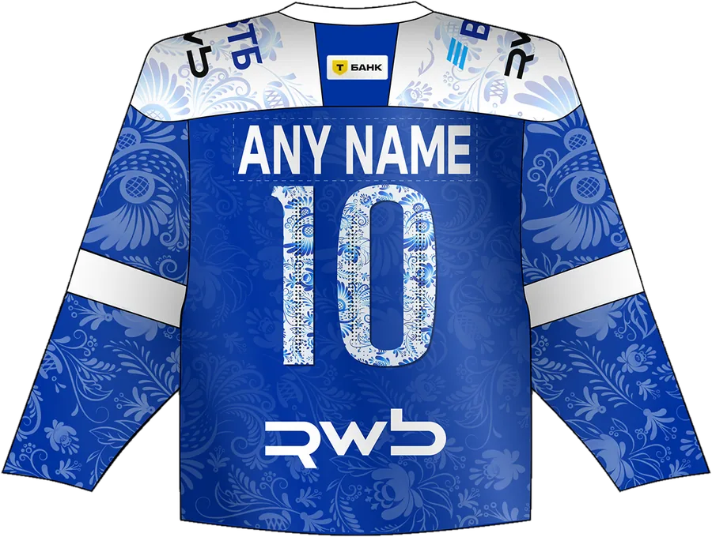
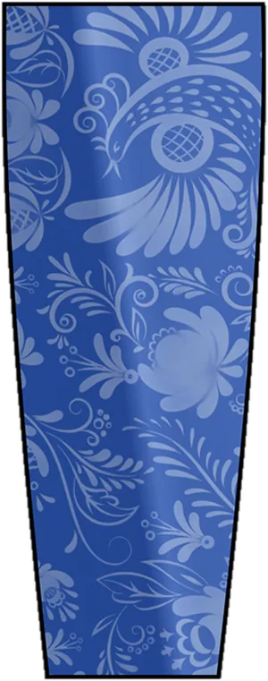
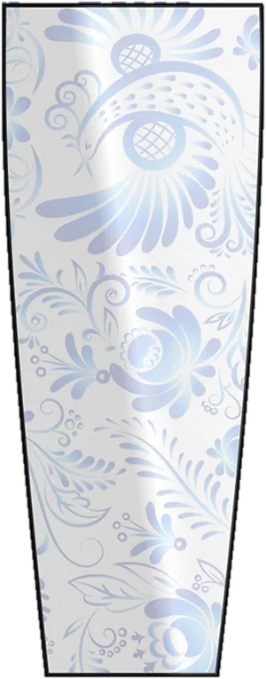

Задача
Придумать альтернативную форму «Динамо», в которой узнаётся Россия, но нет туристических клише.
Гжель подошла идеально. Она сине-белая, как сам клуб, узнаётся с первого взгляда и при этом не кричит. Осталось перенести фарфор на хоккейный свитер так, чтобы он работал и на льду, и на трибуне.
Как думал
Роспись должна стать тканью, а не наклейкой.
На домашнем свитере узор тонет в синем и работает как фактура, на гостевом синие цветы лежат на белом, как на настоящей посуде. Для каждого комплекта свой паттерн: его можно рассмотреть, как роспись на тарелке.
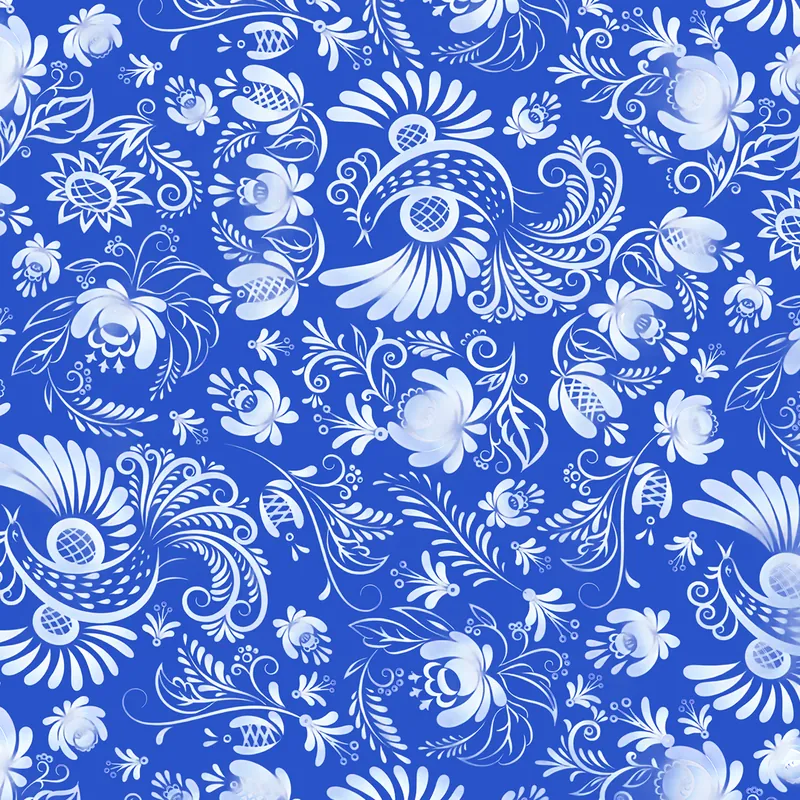
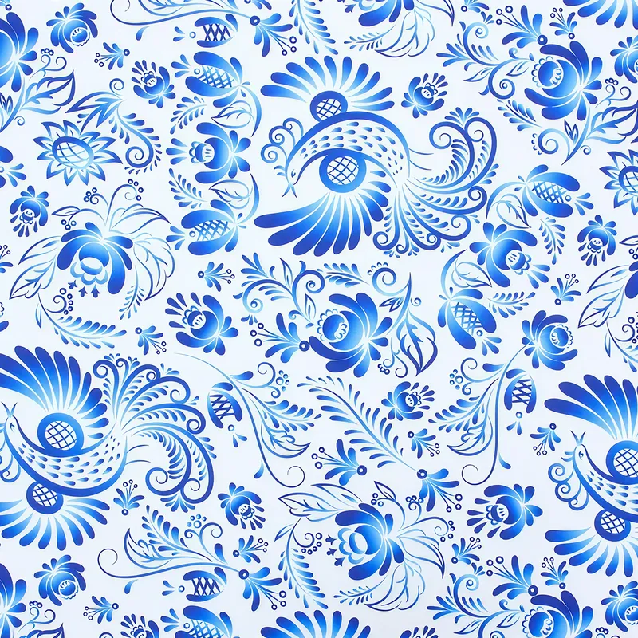
Второй период · Что сделалДва комплекта, два варианта
Переключайте дом и гостей, а ещё два варианта спонсора: каллиграфический Olimpbet или привычный логотип, залитый росписью.
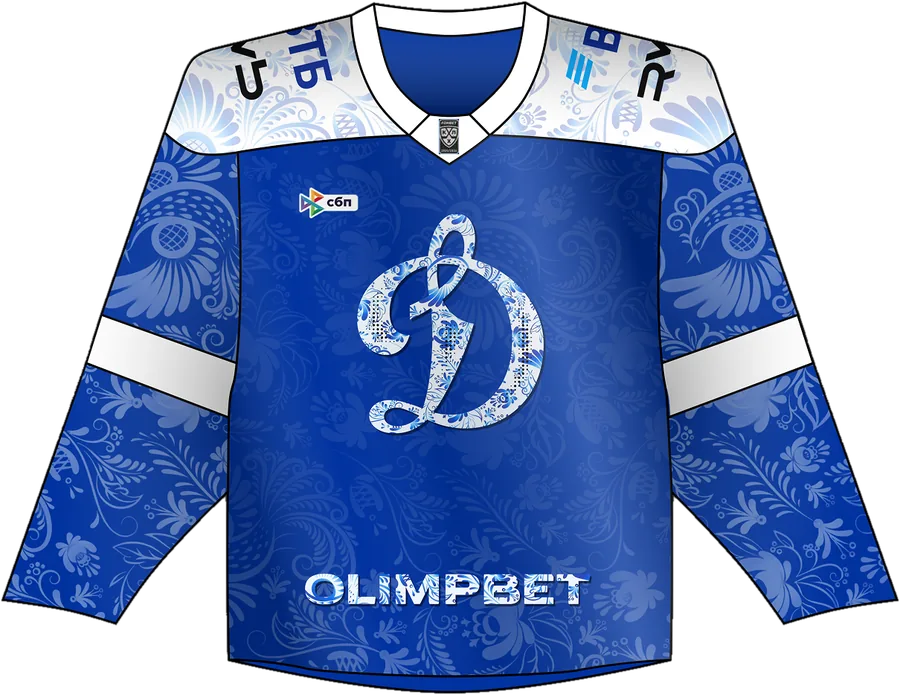
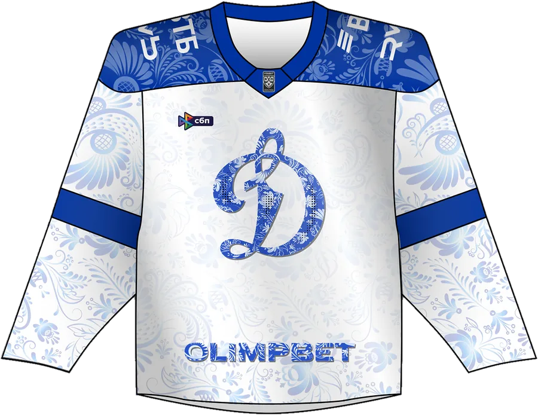

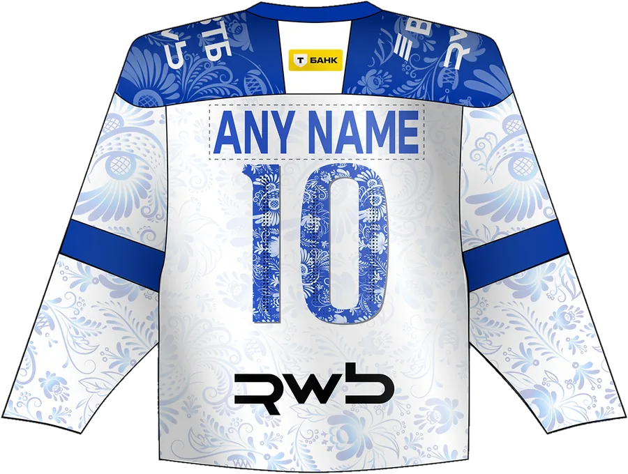
ДеталиЛоготип и номера
Буква «Д» и номера залиты той же росписью. Благодаря этому форма читается целиком, даже когда игрок стоит спиной.
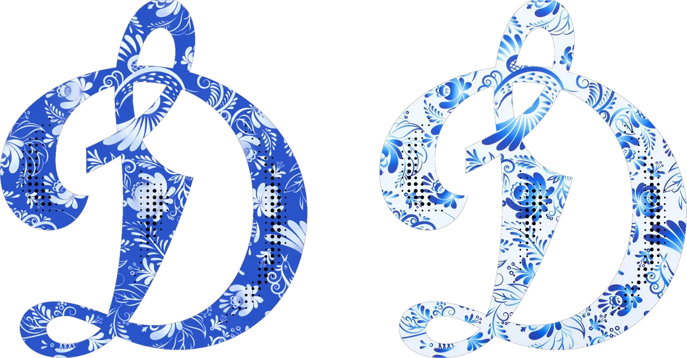
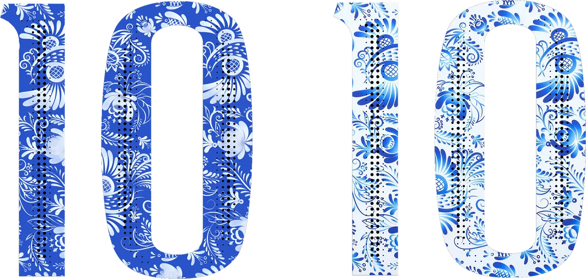
СпонсорOlimpbet в гжели
В первом варианте спонсор написан каллиграфией с градиентом от кобальта #00329F к белому. Во втором остался фирменный логотип, но его буквы тоже расписаны.
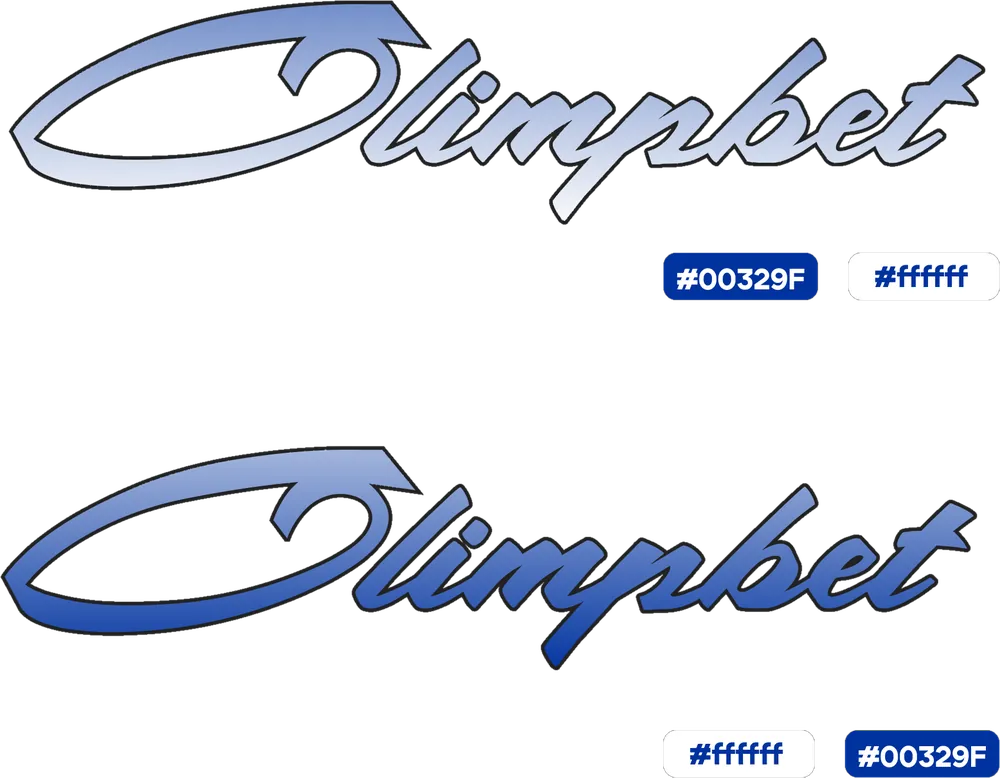
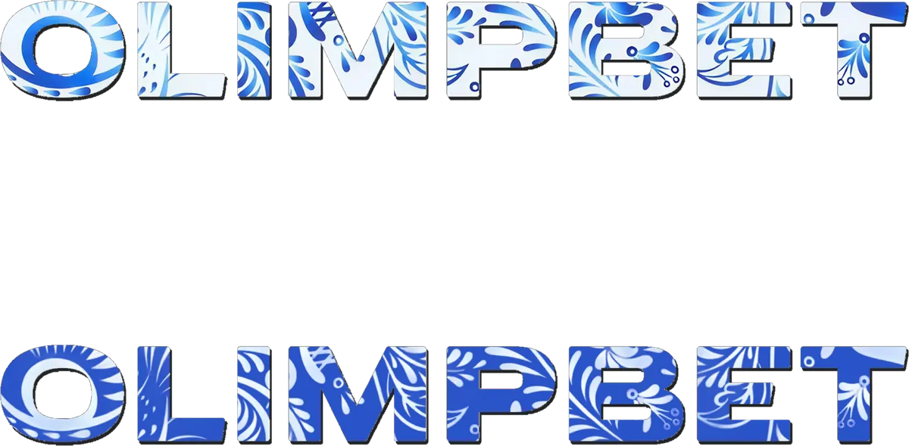
Что вышло
Концепт я показал клубу. В производство форма не пошла.
Зато проект остался в портфолио целиком: два комплекта, два варианта спонсора, паттерны, логотип, номера и гамаши. Если клубу когда-нибудь понадобится гжель, всё уже готово.